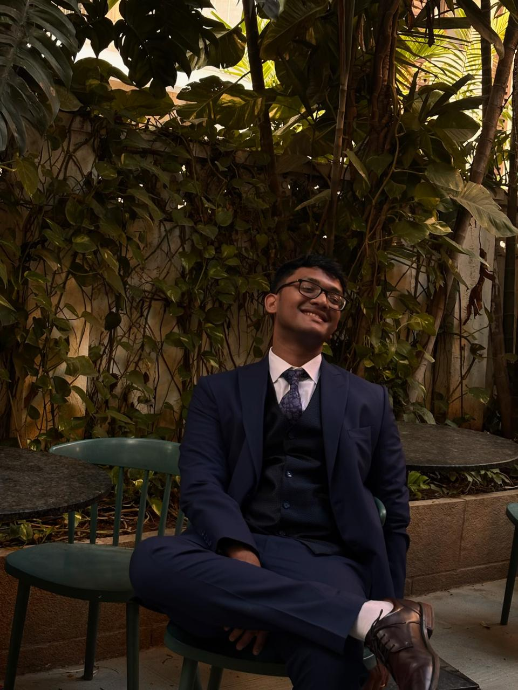
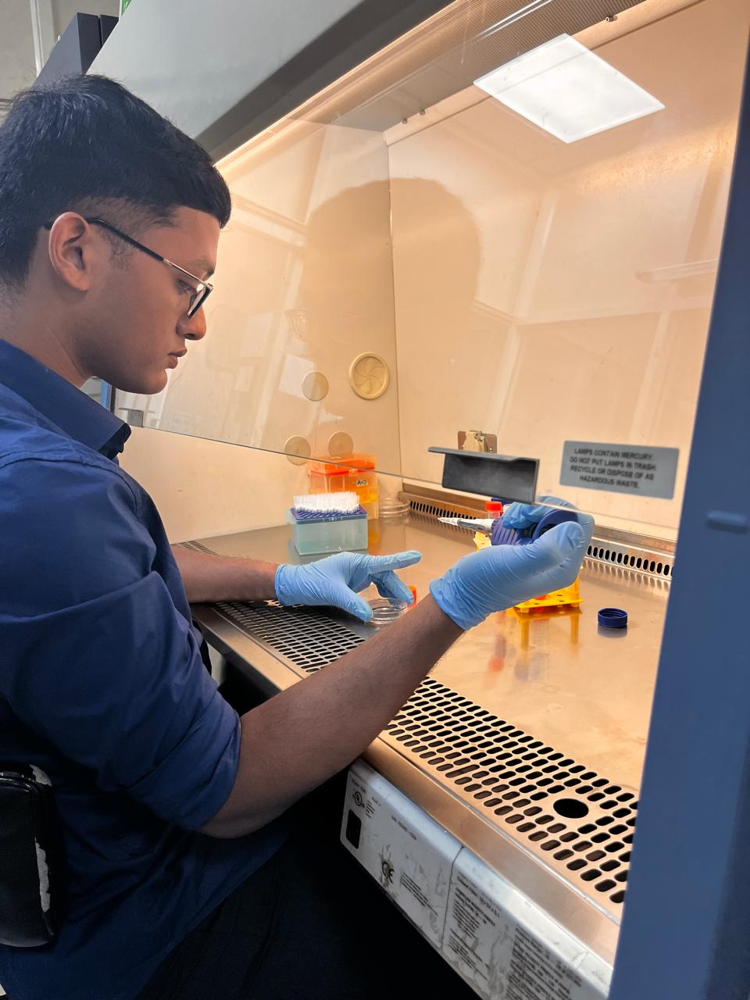

Biomedical Researcher · Chennai, India
I study the genome — how genetic variation shapes disease risk, and how we can exploit biological networks to find better treatments. Currently pursuing a direct PhD in molecular and clinical genomics, with a long-term focus on precision diagnostics.
I'm a Biomedical Sciences graduate from Sri Ramachandra Institute of Higher Education and Research (SRIHER), Chennai. My research sits at the junction of molecular genetics, epidemiology, and computational biology — I want to understand how sequence-level variation translates into phenotypic disease, and how we can intervene early.
My thesis work involves designing and executing a case-control genetic association study in autism spectrum disorder, running statistical models from raw genotyping data all the way to odds ratios and gene-environment interactions. In parallel, I've spent time in in-silico drug discovery — identifying hub genes in lung cancer and docking phytocompounds as potential inhibitors.
Outside the lab, I've led large teams — as a Petty Officer Cadet in the Navy Wing of the NCC and as Cultural Secretary managing a ₹10.2L budget across 300+ students. I believe good science and good leadership aren't that different.
I speak Tamil and Telugu natively, and work in English and Hindi professionally. I'm based in Chennai and actively looking for PhD programmes in molecular and clinical genomics.

Education
B.Sc (Hons) Biomedical Sciences
SRIHER, Chennai · CGPA 8.66 / 10 · 2026
Fellowship
Chancellor's Summer Research Fellowship Top 1 of 289
INR 10,000 grant · In-silico lung cancer research
Looking for
Direct PhD · Molecular & Clinical Genomics
Translational R&D · Precision diagnostics
Each project represents a distinct methodological world — from wet-lab genotyping to network pharmacology to cell biology. Here's what I've been building.
Department of Human Genetics, SRIHER · Guide: Dr. Teena Koshy
Designed and executed a case-control genetic association study (n = 200; 100 ASD cases, 100 sex-matched controls) investigating two XRCC1 SNPs — rs25487 (Arg399Gln) and rs1799782 (Arg194Trp) — in autism susceptibility. Performed PCR-RFLP genotyping, confirmed Hardy-Weinberg equilibrium, and evaluated association under five inheritance models.
Department of Biomedical Sciences, SRIHER · Guide: Dr. Udhaya Lavinya B. · Chancellor's Fellowship
Integrated transcriptomic datasets from the Gene Expression Omnibus (GEO) to identify hub genes in lung cancer progression, then built protein-protein interaction (PPI) networks using Cytoscape. Retrieved 3D structures from PDB, performed energy minimisation via SWISS-PDB Viewer, and predicted active binding sites with CASTp. Screened phytocompounds from PubChem, assessed toxicity with ProTox-II and mcule, and ran molecular docking simulations in AutoDock Vina, visualising hits in PyMOL.
Applied Biology Lab, CSIR-IICT, Hyderabad
Cultured HEK293 cells and performed transfection to assess IDH expression via western blotting. Worked across molecular cloning workflows in an applied cell biology setting — my first intensive exposure to bench science in a national research institute.
"Harnessing Arabinoxylan Coated Probiotics to Modulate Gut Microbiota and Manage Type 2 Diabetes"
International Conference on Microbial Innovations · D.G. Vaishnav College, Chennai
XRCC1 Gene Polymorphisms and Autism Spectrum Disorder Risk — A Case-Control Study (n = 200)
Target submission 2026 · Department of Human Genetics, SRIHER
In-Silico Identification of Phytocompound Candidates Targeting Hub-Genes in Lung Cancer — Network Pharmacology and Molecular Docking Study
Target submission 2026 · Department of Biomedical Sciences, SRIHER
Wet Lab
Computational
Study Design & Stats
I'm actively exploring direct PhD programmes in molecular and clinical genomics. If you're working on something at the intersection of genomics, diagnostics, or precision medicine — I'd love to talk.